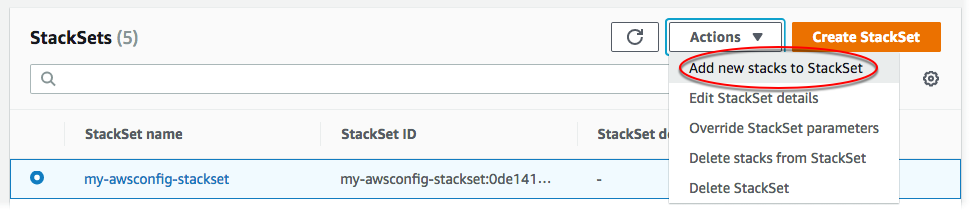

Die vorliegende Übersetzung wurde maschinell erstellt. Im Falle eines Konflikts oder eines Widerspruchs zwischen dieser übersetzten Fassung und der englischen Fassung (einschließlich infolge von Verzögerungen bei der Übersetzung) ist die englische Fassung maßgeblich.
Hinzufügen von Stacks zu einem Stack-Set
Wenn Sie ein Stack-Set erstellen, können Sie die Stacks für das betreffende Stack-Set erstellen. AWS CloudFormation ermöglicht Ihnen zudem, zu einem beliebigen Zeitpunkt, nachdem das Stack-Set erstellt wurde, weitere Stacks für zusätzliche Konten und Regionen hinzuzufügen. Sie können Stack-Instances entweder mithilfe der AWS CloudFormation-Konsole oder mithilfe von AWS CloudFormation-Befehlen in der AWS CLI hinzufügen. Bei diesem Verfahren fügen wir Stack-Instances für eine zusätzliche Region zu dem in Erstellen eines Stack-Sets erstellten Stack-Set hinzu.
Themen
Hinzufügen von Stack-Instances zu einem Stack-Set mithilfe der AWS Management Console
Öffnen Sie die AWS CloudFormation-Konsole unter https://console.aws.amazon.com/cloudformation
. -
Wählen Sie im Navigationsbereich StackSets aus. Wählen Sie auf der StackSets-Seite das Stack-Set aus, das Sie in Erstellen eines Stack-Sets erstellt haben.
-
Wählen Sie nach Auswahl des Stack-Sets die Option Add new stacks to StackSet (Neue Stacks zu StackSet hinzufügen) im Menü Actions (Aktionen) aus.
 -
Geben Sie auf der Seite Set deployment options (Bereitstellungsoptionen festlegen) die Konten und Regionen an, in denen Stacks für Ihr Stack-Set hinzugefügt werden sollen.
AWS CloudFormation stellt Stacks in den angegebenen Konten innerhalb der ersten Region bereit und fährt dann mit der jeweils nächsten Region fort, solange die Bereitstellungsfehler für eine Region eine festgelegte Fehlertoleranz nicht überschreiten.
-
[Selbstverwaltete Berechtigungen] Wählen Sie für Deployment targets (Bereitstellungsziele) die Option Deploy stacks in accounts (Stacks in Konten bereitstellen) aus. Fügen Sie Ihre Zielkonto-Zahlen in das Textfeld ein und trennen Sie dabei die einzelnen Zahlen durch Kommas.
[Serviceverwaltete Berechtigungen] Wählen Sie für Deployment targets (Bereitstellungsziele) die Konten in Ihrer Organisation für die Bereitstellung aus.
-
Wählen Sie Deploy to organization (In Organisation bereitstellen) aus, um für alle Konten in Ihrer Organisation bereitzustellen.

-
Wählen Deploy to organizational units (OUs) (Für Organisationseinheiten (OUs) bereitstellen) aus, um für alle Konten in bestimmten Organisationseinheiten bereitzustellen. Wählen Sie Add another OU (Weitere OU hinzufügen) aus und fügen Sie dann die Ziel-OU-ID in das Textfeld ein. Wiederholen Sie den Vorgang für jede neue Ziel-OU. StackSets visiert auch untergeordnete OUs der ausgewählten Ziele an.

Anmerkung
Wenn Sie eine Organisationseinheit hinzufügen, die der Stack bereits anvisiert, erstellt StackSets neue Stack-Instances in allen Konten in der Organisationseinheit, die noch nicht über Stack-Instances aus dem Stack-Set verfügen (z. B. Konten, die der OU hinzugefügt wurden, nachdem das Stack-Set erstellt wurde, mit deaktivierten automatischen Bereitstellungen).
-
-
Für Deployment regions (Bereitstellungsregionen) wählen Sie "USA West (Nordkalifornien)" aus. Sie werden für die von Ihnen angegebenen Ziele neue Stacks in der Region "USA West (Nordkalifornien)" erstellen.
Wenn Sie mehrere Regionen hinzufügen, bestimmt die Reihenfolge der Regionen unter Specify regions (Regionen angeben) die Reihenfolge ihrer Bereitstellung.
-
Für Deployment options (Bereitstellungsoptionen):
-
Für Maximum concurrent accounts (Maximale Anzahl paralleler Konten) behalten Sie die Standardwerte Number (Zahl) und 1 bei.
Dies bewirkt, dass AWS CloudFormation Ihren Stack jeweils nur in einem Konto bereitstellt.
-
Behalten Sie für Failure tolerance (Fehlertoleranz) die Standardwerte Number (Zahl) und 0 bei.
Dies bedeutet, dass maximal eine Stack-Bereitstellung in einer der angegebenen Regionen fehlschlagen kann, bevor AWS CloudFormation die Bereitstellung in der aktuellen Region stoppt und die Bereitstellung in den verbleibenden Regionen abbricht. Wenn Sie möchten, dass CloudFormation fehlertoleranter ist, erhöhen Sie diesen Wert.
Wählen Sie Next (Weiter).
-
-
-
Lassen Sie auf der Seite Specify Overrides (Außerkraftsetzungen angeben) die Eigenschaftswerte unverändert. Für die zu erstellenden Stacks werden keine Eigenschaftswerte überschrieben. Wählen Sie Next (Weiter).
-
Überprüfen Sie Ihre Auswahl und die Eigenschaften Ihres Stack-Sets auf der Seite Review. Um Änderungen vorzunehmen, wählen Sie Edit (Bearbeiten) im Bereich, in dem Sie Eigenschaften ändern möchten. Bevor Sie die neuen Stacks erstellen können, müssen Sie das Kontrollkästchen im Bereich Capabilities (Funktionalitäten) aktivieren. Sie erkennen damit an, dass einige der Ressourcen, die Sie mit dem Stack-Set erstellen, unter Umständen neue IAM-Ressourcen und -Berechtigungen erfordern. Weitere Informationen zu eventuell erforderlichen Berechtigungen finden Sie unter Bestätigung der IAM-Ressourcen in AWS-CloudFormation-Vorlagen in dieser Anleitung. Wenn Sie bereit sind, Ihre Stack-Instances zu erstellen, wählen Sie Submit (Einsenden).

-
AWS CloudFormation beginnt mit dem Erstellen Ihrer Stack-Instances. Auf der StackSet-Detailseite, die beim Auswählen von Submit (Einsenden) geöffnet wird, können Sie Fortschritt und Status beim Erstellen der Stack-Instances in Ihrem Stack-Set verfolgen. Wenn dieser Vorgang abgeschlossen ist, sollten Ihre neuen Stack-Instances auf der Registerkarte Stack instances (Stack-Instances) aufgelistet sein.

Hinzufügen von Stack-Instances zu einem Stack-Set mithilfe der AWS CLI
Wenn Sie als delegierter Administrator handeln, müssen Sie den Parameter --call-as jedes Mal auf DELEGATED_ADMIN festlegen, wenn Sie einen StackSets-Befehl ausführen.
--call-asDELEGATED_ADMIN
-
Öffnen Sie die AWS CLI.
-
Führen Sie den Befehl
create-stack-instancesaus.[Selbstverwaltete Berechtigungen] Geben Sie die Konto-IDs an, für die Sie Stack-Instances erstellen möchten.
aws cloudformation create-stack-instances --stack-set-namemy-awsconfig-stackset--accounts '["account_id"]' --regions '["eu-west-1", "us-west-2"]'[Serviceverwaltete Berechtigungen] Geben Sie die Organisations-(Stamm-)ID oder OU-IDs an, für die Sie Stack-Instances erstellen möchten. In diesem Beispiel geben wir OUs mit
ou-rcuk-1x5j1lwo- undou-rcuk-slr5lh0a-IDs an.aws cloudformation create-stack-instances --stack-set-nameStackSet-myApp--deployment-targets OrganizationalUnitIds='["ou-rcuk-r1qi0wl7"]' --regions '["eu-west-1", "us-west-2"]'Anmerkung
Wenn Sie eine Organisationseinheit hinzufügen, die der Stack bereits anvisiert, erstellt StackSets neue Stack-Instances in allen Konten in der Organisationseinheit, die noch nicht über Stack-Instances aus dem Stack-Set verfügen (z. B. Konten, die der OU hinzugefügt wurden, nachdem das Stack-Set erstellt wurde, mit deaktivierten automatischen Bereitstellungen).